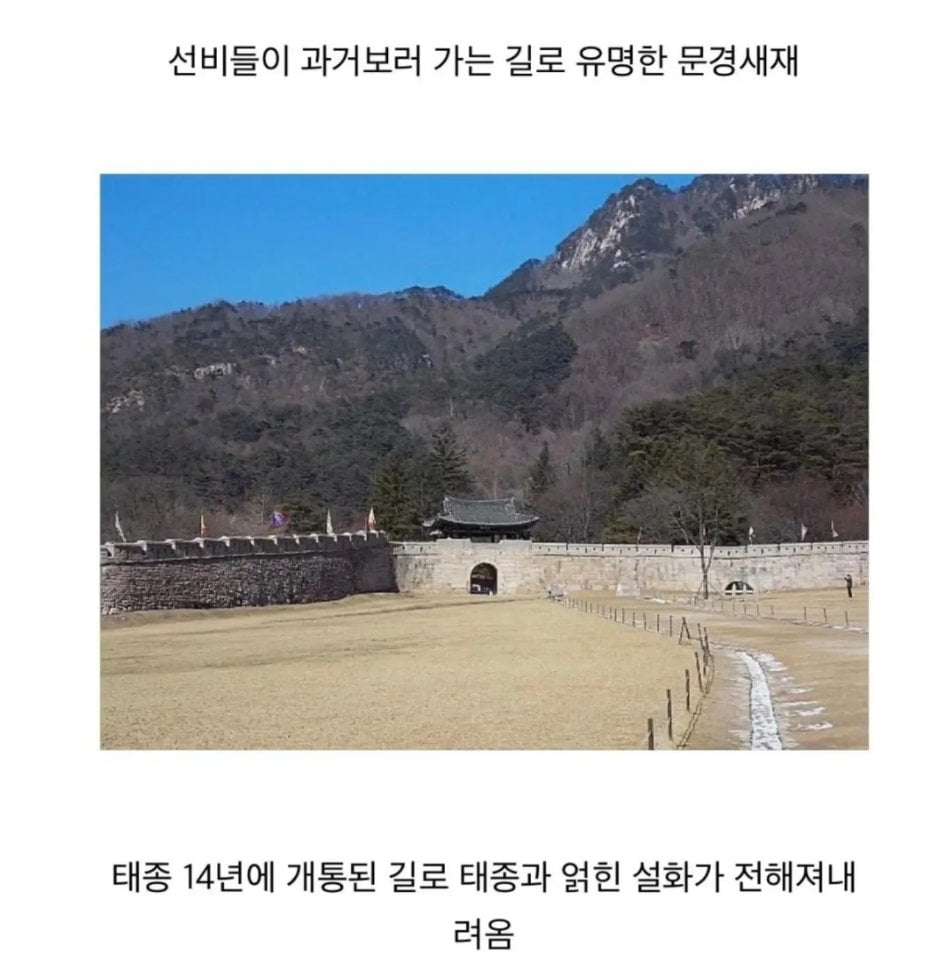
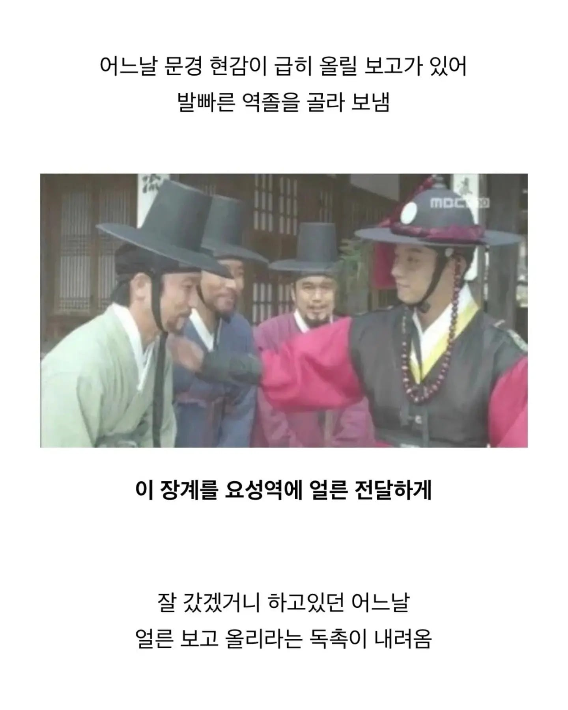
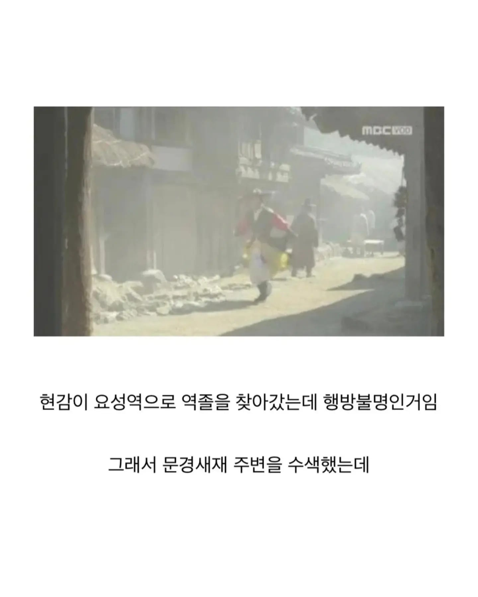
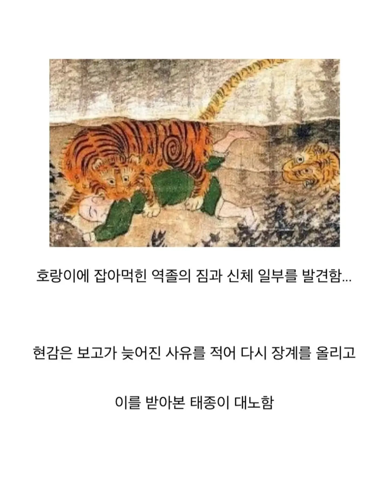
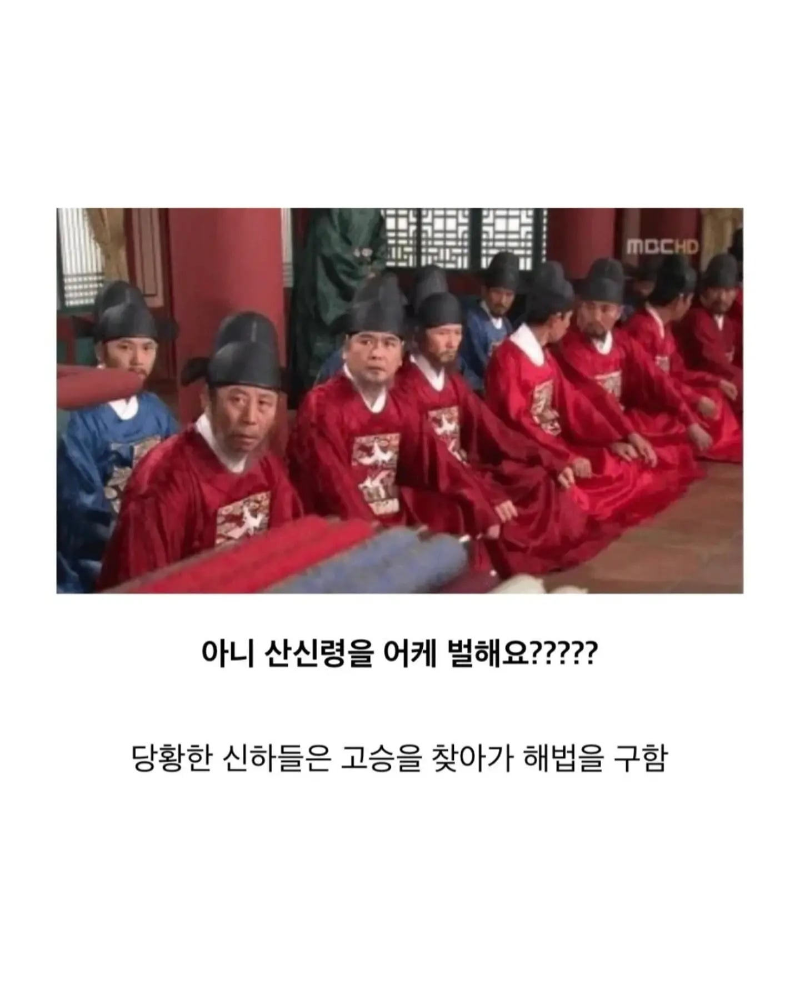
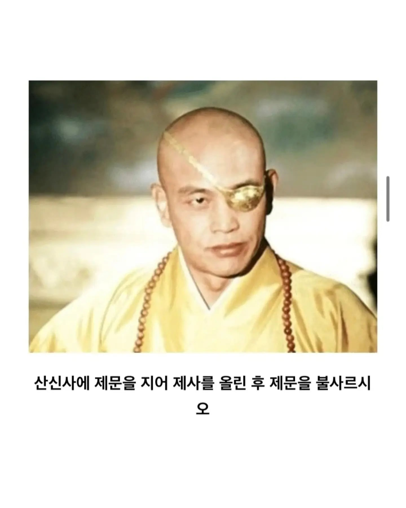
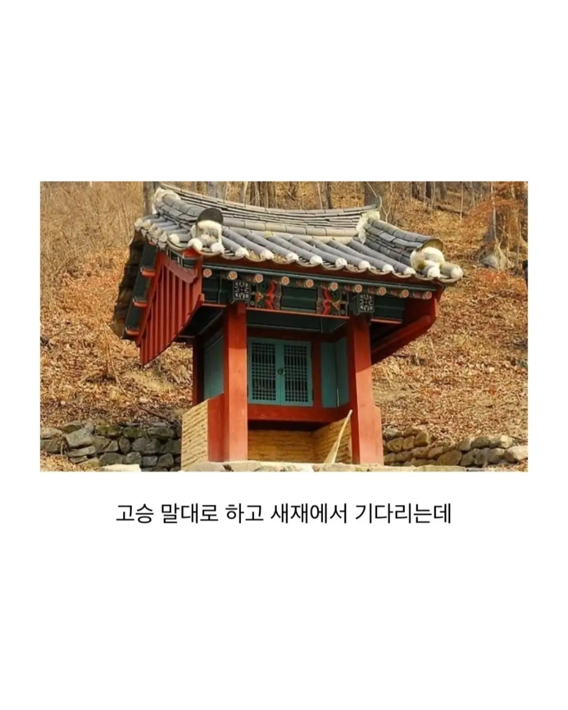
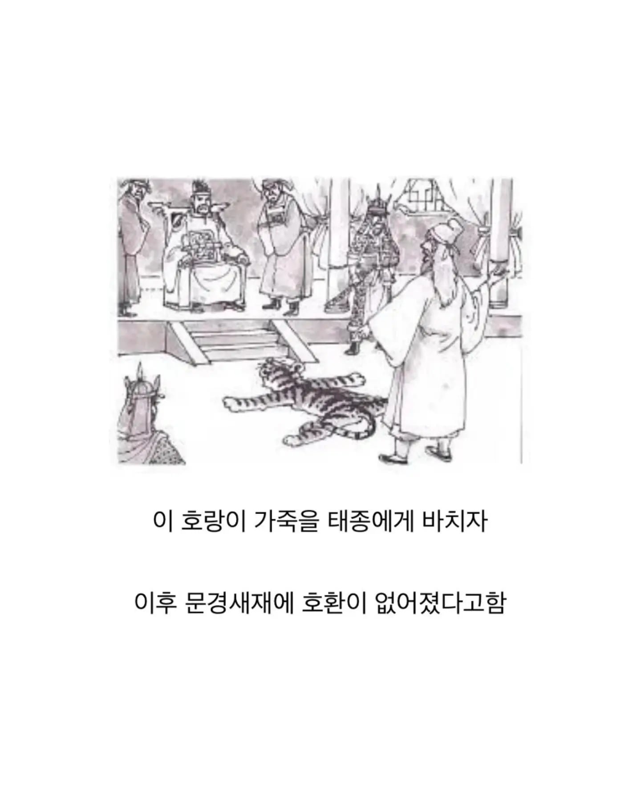
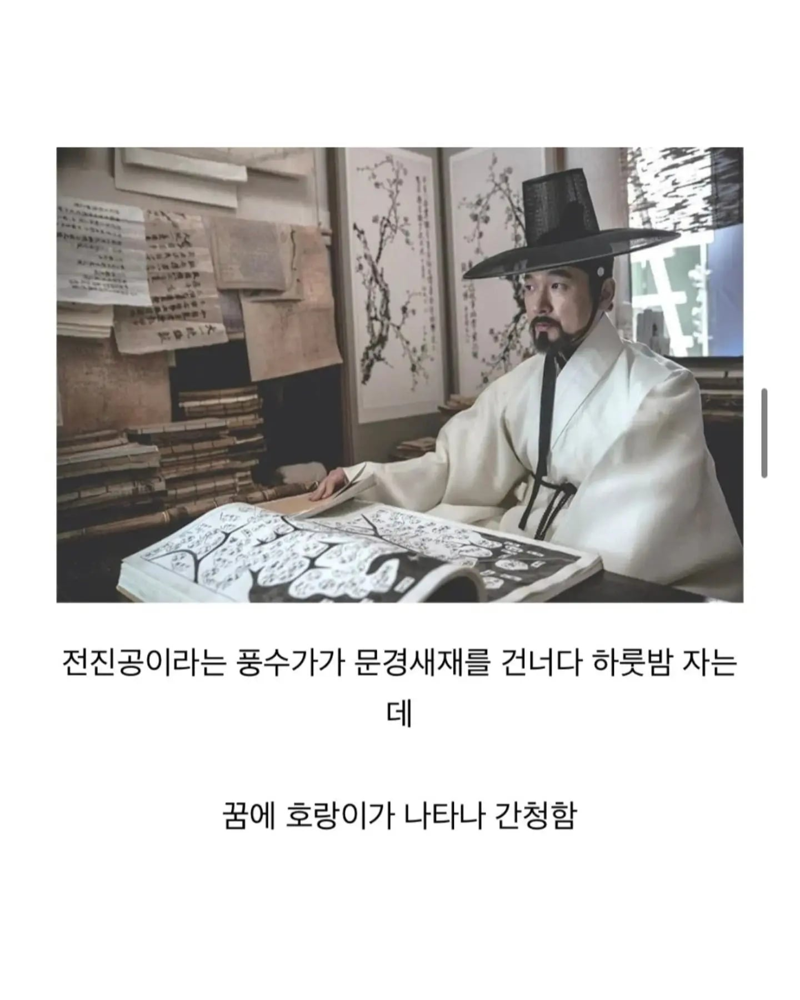
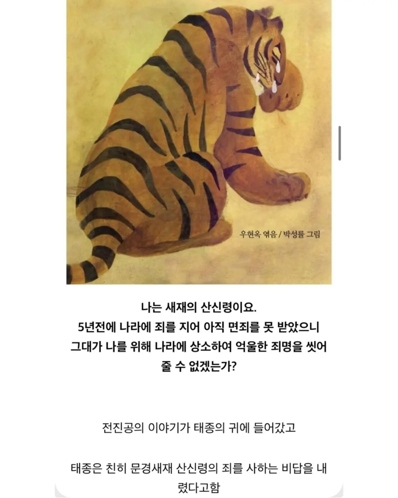
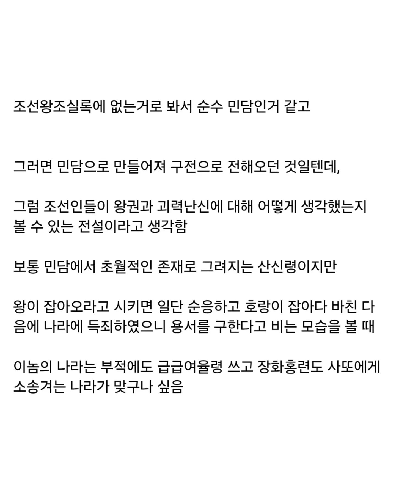











이건뭐야 또ㅋㅋㅋㅋ
산신령 이 권력의 개 같으니
결국 모든것이 왕 아래있다는것인가 ㅋㅋ
일단 왕 위에 뭐가 있는 이야기는 역모라 지은이가 사라짐
대목장들이 나무벨때 어명이요 외치는게 다 이유가 있음
산신령이나 토지신같은걸 책봉하는 개념은 중국 당송때도 있었긴 함
오만방자한 왕족놈들 ㅋㅋㅋ
급급여율령 얍
'행장, 야사에 써있는것은 모두 사실이다'
산신령 너 까불면 죽어!!
우리 조상들은 저승 혹은 사후세계나 귀신사회도 이승과 마찬가지로 관료제 사회일 것이라고 생각할 정도임 . 오죽하면 부적에 급급여율령(急急如律令. 도교 혹은 무속에서 경문이나 부적에서 주로 사용하는 용어. 주문의 내용이 빨리 실행되어 효력이 나타나길 바란다는 뜻으로 원래는 한나라때 공문서 뒤에 붙이는 관용어구로 늦장 피우지 말고 정해진 율령대로 빨리 처리하라는 의미로 사용되던 용어임) 이라고 쓸 정도니...
현재도 웹소설 같은거 보면 현대 한타물들 보면 이들을 관리하고 행정처리하는 헌터관리청 같은 정부기관이 있는 경우가 많음. 아니 일개 전투력이 군대를 뛰어넘는 이능력자들도 관리하는 정부부처가 있다는 것을 아주 당연하게 생각한다니까. ㅋㅋㅋ
하지만 정부가 찐빠를 내면 바로 뒤엎는 시민들
사람이 태어나면 번호를 붙여서 평생 관리하는것도 당연하다고 생각함
헌터물 관료제 성립의 정수 임기첫날게이트가열렸다를 보시오
너때문에 강등당했자나 큰산냥이 새끼야 퍽
산의 주인은 산신령이 아니라 왕이닷
정착한 중앙집권국가의 모습을 보여주는 구전설화인듯ㅋㅋ
하긴 왕 지나간다고 나무가 가지 들어서 치워줬다고 벼슬까지 내린 적도 있었지 ㅋㅋㅋㅋ
산신령도 철퇴를 맞으면 죽나 궁금하네
급급여율령은 원래 한나라의 공문서양식이었다가 도교문화에서 공식 부적 포맷으로 만들어서 조선으로 전래된거라 조선만의 문화는 아니기는 함
참고로 그 포맷을 부적에 처음 도입한게 오두미도의 초대 교주인 장릉, 우리가 아는 한중의 장로의 할아버지임
관료제에 미친나라
관료제의 장점과 단점이 극단적으로 나타나는 나라 ㅋㅋ
급급여율령 = 법령에 따라 속히 처리하라 = 근거 규정에 의거하여 신속히 처리하여 주시기를 바랍니다(저승 공무원인 저승사자들한테 온라인 신문고 넣는 소리)
동양인들은 이걸 주문으로 외우고 있는 거임 ㅋㅋㅋㅋ 뼛속까지 관료제가 체화되어버린...
산신령도 인사발령 받는구나 ㅋㅋ
산신냥이 자수안하고 자살해버렸네;
태종과 고승이 동일 배우 출연이네 ㅋㅋ
나무 벨때도 어명이오 하잖아 왕이 킹왕짱이야